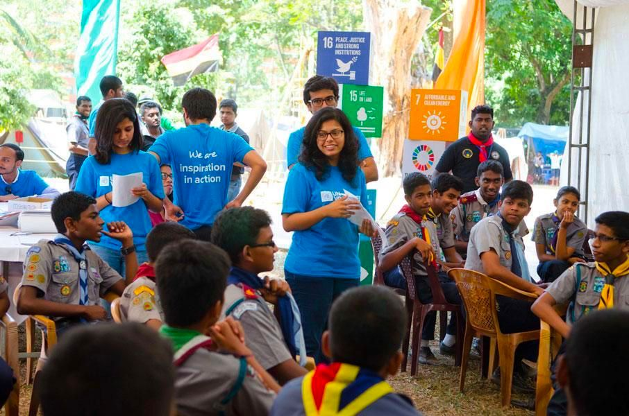
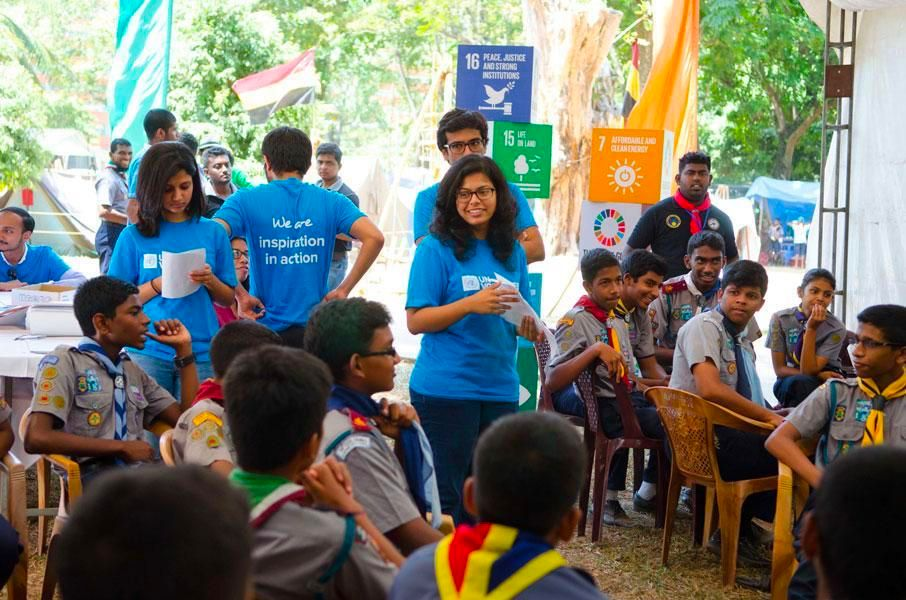
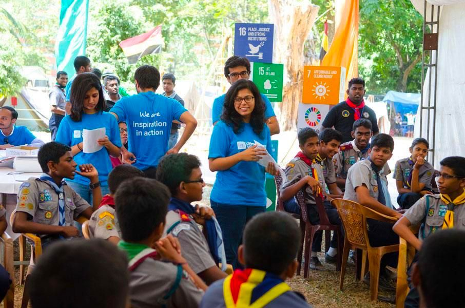

Our Team in Action
 

Learn more about the Matsila Foundation
Our passionate leadership team is dedicated to helping vulnerable communities in South Africa, building hope, restoring dignity, and creating opportunities.
The Matsila Foundation was officially founded in 2015, evolving from a small neighborhood initiative into a respected non-profit organization. Over the years, we have expanded our reach across multiple provinces, establishing community centers, feeding programs, and educational initiatives. What began as a family-led effort to support local families in need has grown into a collaborative movement, partnering with schools, businesses, and volunteers to create lasting impact in underserved communities. Today, the Foundation continues to innovate programs that address hunger, poverty, and social inequality while fostering a culture of compassion and civic responsibility.
Mission: Uplifting vulnerable families by providing food, clothing, and support while promoting compassion and generosity.
Vision: Creating stronger, healthier, and self-sufficient communities through sustainable projects.
